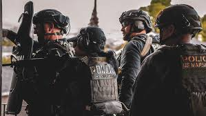

United States Marshal Service
San Andreas Division

Justice, Integrity, Service
🛡️ Historia Jednostki
United States Marshals Service to najstarsza i jedna z najbardziej elitarnych federalnych agencji w Stanach Zjednoczonych. Powstała w 1789 roku, a w 1969 oficjalnie uzyskała status niezależnej agencji federalnej, wyodrębnionej z Departamentu Sprawiedliwości.
Marshalowie to specjaliści od działań w terenie, odpowiedzialni za ściganie najgroźniejszych przestępców, walkę z kartelami narkotykowymi, ochronę porządku w rejonach federalnych, zabezpieczenie budynków rządowych oraz prowadzenie programu ochrony świadków. Często wykonują też tajne operacje kontrterrorystyczne na zlecenie Departamentu Sprawiedliwości.
🎯 Główne Zadania
- Konwojowanie osadzonych
- Zabezpieczanie budynków federalnych i sądów
- Prowadzenie programu ochrony świadków (WITSEC)
- Wspieranie operacji kontrterrorystycznych
- Współpraca z innymi agencjami federalnymi
- Konwojowanie osób, wobec których orzeczono karę pozbawienia wolności
- Tropienie osób poszukiwanych listami gończymi oraz zbiegów z więzień
- Ochrona obiektów oraz personelu Departamentu Sprawiedliwości
- Współpraca z regionalnymi służbami porządkowymi
- Działania wspierające jednostki kontrterrorystyczne na prośbę dowództwa
🔐 Uprawnienia
- Operacyjno-rozpoznawcze
- Dochodzeniowo-śledcze
- Administracyjno-porządkowe
- Prewencyjne
- Możliwość przeprowadzania kontroli przewozu bezpośredniego
- Dostęp do kamizelek taktycznych oraz kuloodpornych
- Dostęp do wyznaczonych kanałów radiowych dla służb publicznych
📝 Rekrutacja
Jeśli chcesz dołączyć do naszej jednostki, wypełnij formularz zgłoszeniowy:
Wypełnij formularz